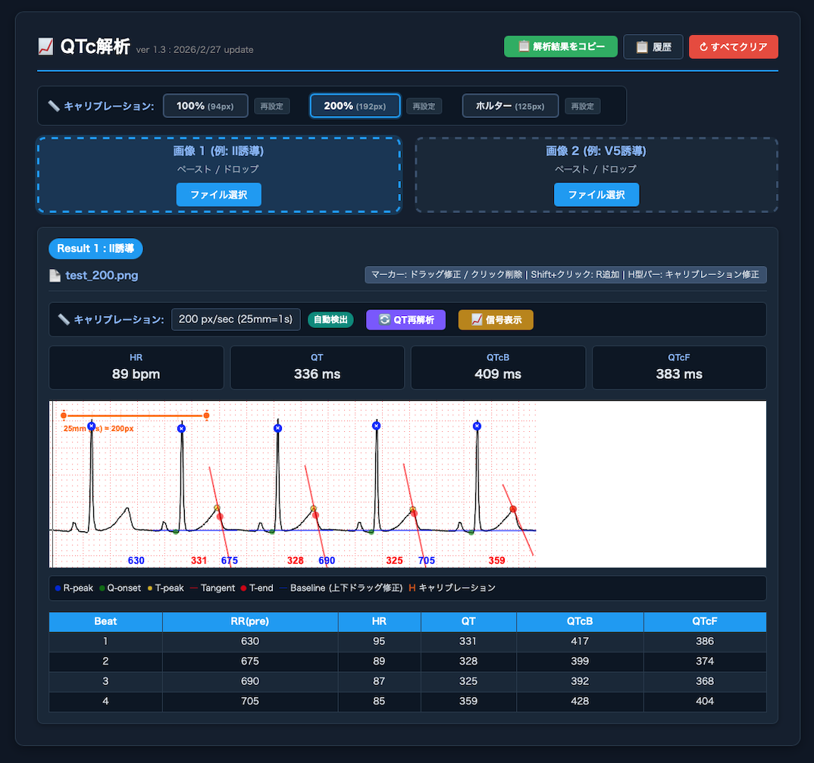
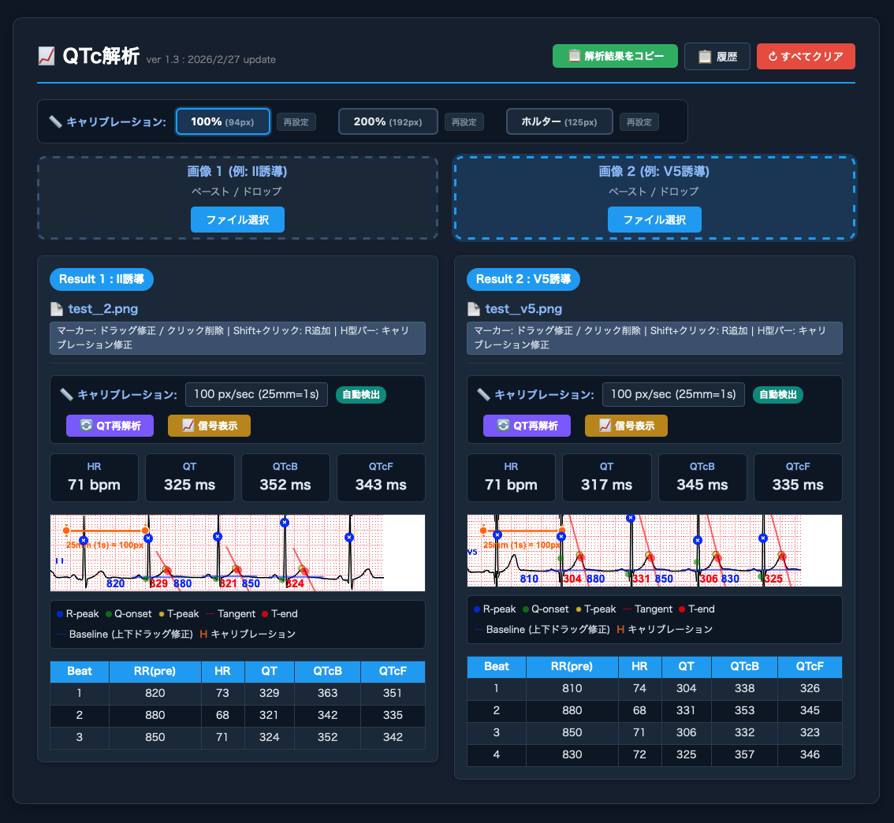

2025/5/21 update
最近AIにハマっていて、QTcを接線法で計測するアプリを作ってみました(claude opus 4.6で作り始めましたが、すぐに上限に達するので、google antigravityも併用 )。
7拍の心電図画像をコピペすると、ペーストした分の波形のQT時間を平均した数値を表示して、テキストデータでペーストできます。
QTc測定の原則は2誘導、V5誘導と考えて、12誘導からこの2誘導をコピペする設定にしていますがのどの波形でも計測します。
100%、200%というのは、心電図の拡大率です。100%だと精度的には問題かなと思います。200%だと±5msくらいにはなる印象。
ホルター心電図の心電図も計測できるように、3種類のキャリブレーションを保存できるように設計しています。
キャリブレーションはペーストする度に自動計測を試みる仕様にしていましたが、修正を繰り返しても許容できる精度がだせませんでした。
時間の無駄と思い、手動での調整に切り替えました。
手動調整したキャリブレーションを一度「再設定」するとその環境(PC)に保存されて、以後は、100%や200%, ホルターのボタンを押すとそのキャリブレーションが採用されます。キャリブレーションはディスプレイに依存します。ですのでパソコン毎で設定が必要です。
再設定したキャリブレーションの値はそのパソコンに保存されるので、一度キャリブレーションを保存したら、後は再調整は不要です。
R波(青バツマーカ)、QRSの開始(緑マーカ)、QTの 接線(赤線)、基線(青線)は修正可能です。
基線と接線は、手動で動かせます。
R波は、shift + クリックで、追加可能です。
webアプリですが、中身はシンプルなコードで、ネット環境は不要なので、電子カルテ内にいれて、windows edgeで開くと、電子カルテ環境でも使えます。
zip圧縮しています。qtc.htmlが本体で、心電図のサンプルがいくつか入っています。
ドロップエリアに心電図サンプルをドラッグしてみてください。
素人が作ったおもちゃみたいなもので、精度には問題があると思いますが、使ってみてください。感想をお聞かせください。
※吉永先生が1つのホルターから10拍ずつ5か所、合計50心拍のQT時間を計測すると聞いて、そんなことはできないと思っていましたが、このツールを使うと、5回のドラッグで50拍分計測できてしまいます。
※ 2026/4/9 ver.1.7 : 基線が上に行く傾向を修正しました
※ 2026/5/21 ver.1.8 : 基線が下に行く傾向を修正しました
qtc.htmlとサンプル心電図画像のダウンロード
qtc.htmlが本体です。サンプル心電図が8つ入っています。
zipファイル 2026/4/9更新
スマホで下記サイトを開くと、実際のwebアプリが表示されます。
qtc.html
スマホで心電図を写真にとって解析するversionです。
スマホの写真に撮って、解析したい心電図領域を2拍分ドラッグして確定し、解析します。精度はいまいちです。
どのようなアルゴリズムで解析しているかAIが書いた仕様書です。わけが分かりません。
このような結果が表示されます


「解析結果をコピー」ボタンを押すと、下記のようなテキストがクリップボードに保存されます。
電子カルテの記事にペースト可能です。
2誘導 : HR 66, QT 344, QTcB 362, QTcF 356 (3beats)
V5誘導 : HR 67, QT 336, QTcB 355, QTcF 349 (4beats)
※ 「信号表示」を選択すると、アプリが認識している心電図波形とQT領域が表示されます。
これがでたらめになっているとき、「ホルター」が選択されていないか、確認して下さい。
「ホルター」モードは、心電図の波形の色を認識するアルゴリズムの関係で、通常の心電図を大きく誤認識することがあります。
「100%」「200%」のボタンを押すことで、認識が大きく改善することがあります。